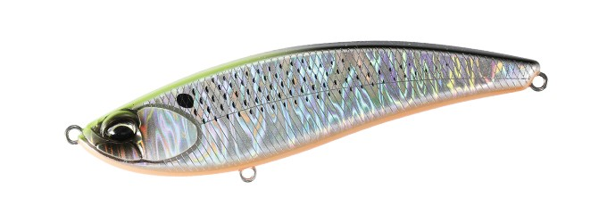
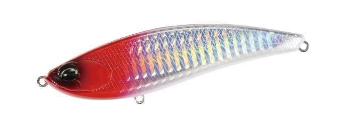
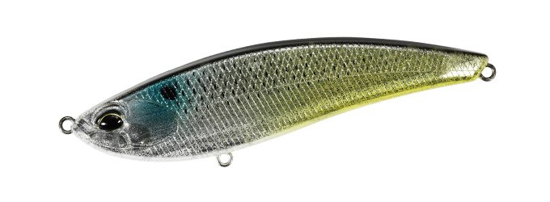
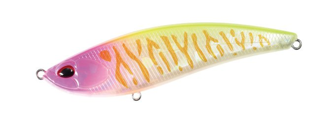

ベイルーフ バルク95F
（Bay RUF BULK 95F）
ベイルーフ バルク95FはDUO（デュオ）のフラットサイドリップレスミノーです。
高浮力ワイドボディが生むトルクフルな水押しで、ボディサイズを超えるアピール力を持つ“小さな巨人”。広範囲から魚を呼ぶパワーがありながら、違和感なくバイトに持ち込めるコンパクトな95mmサイズに設定されています。

画像出典:DUO公式HP
スペック
- メーカー
- DUO（デュオ）
- タイプ
- リップレスミノー（重心移動・フローティング）
- 全長
- 95mm
- 自重
- 14g
- レンジ
- 0〜0.5m
- フック
- #5
- リング
- フックアイ#3.5
- 重心
- 7mmタングステンボール
- ターゲット
- シーバス
- 価格
- 2,420円（税込）
▼今すぐチェック

バルク95Fの特徴
ボディサイズを超える水押しで魚を呼ぶ、95mmのリップレスミノー
-
高浮力ワイドボディのトルクフルな水押し
フラットサイドの高浮力ワイドボディが強い水押しを生み、ボディサイズ以上のアピール力で広範囲から魚を呼びます。
-
違和感なく食わせるコンパクトサイズ
アピール力を持ちながら、バイトに持ち込みやすいコンパクトな95mmに設定されています。
-
レンジコントロールとレスポンス
優れたレンジコントロール性能と高いアクションレスポンスで、さまざまな攻め方に対応します。
-
7mmタングステンボールで飛距離
7mmのタングステンボールを搭載し、抜群の飛距離とキャストフィールを実現しています。
バルク95Fの使い方
基本はただ巻き。ワイドボディの水押しを感じながら、レンジ0〜0.5mのシャローを引いてきます。
レンジコントロールがしやすいので、ロッドの角度や巻き速度で水面直下からもう少し下まで、狙いたいレンジに合わせて調整しましょう。
バルク95Fの得意な状況
河川や港湾のシャローで、イナッコなどのベイトについたシーバスを狙う場面。強い水押しで魚を呼びたいけれど、大きなルアーでは見切られそうなときに向いています。
ワンポイント
コノシロなど大きめのベイトの時期や、もう少し深いレンジ・パワーゲームでは、同じバルクの125F（25g・レンジ0.1〜0.6m）との使い分けがオススメです。
バルクの使い分け
| モデル | 全長／自重 | 得意な場面 |
|---|---|---|
| バルク95F | 95mm／14g | レンジ0〜0.5m。コンパクトなサイズで違和感なく食わせる（本記事のモデル） |
| バルク125F | 125mm／25g | レンジ0.1〜0.6m。シャロー〜ミッドレンジとパワーゲームに |
どちらも高浮力ワイドボディのフラットサイドリップレスミノー。ベイトが小さいときやプレッシャーが高いときは95F、コノシロなど大きめのベイトや、少し深いレンジ・パワーゲームには125Fと使い分けましょう。
人気カラー
全13色の中から4色を紹介します。

CPA0898 サイトチャートコノシロチャートの背中で視認性を高めたコノシロ系。

AHA0001 レッドヘッドホロホロのフラッシングとレッドヘッドの定番系。

CCC3237 イナッコイナッコ（ボラの幼魚）を意識したナチュラルカラー。イナッコパターンに。

CLB0840 ピンクメロウタイガーピンク系のタイガー柄でアピールするカラー。濁りやローライトに。
画像出典:DUO公式HP
バルク95Fに似ているルアー
-
 ベイルーフ バルク125F
DUO
詳細はこちら＞
ベイルーフ バルク125F
DUO
詳細はこちら＞
同じバルクの125mm・25g。ベイトが大きいときや、少し深いレンジ・パワーゲームに。
-
 ウィリップ87F
POP SEA CREW
詳細はこちら＞
ウィリップ87F
POP SEA CREW
詳細はこちら＞
全長87mm・自重13gのフローティングミノー。同じくらいのサイズで、巻き速度でアクションを変えたいときに。
-
 アイザー100F
ブルーブルー
詳細はこちら＞
アイザー100F
ブルーブルー
詳細はこちら＞
全長100mm・自重13.5gのシャローランナー。同じクラスの重さで、レンジ5〜20cmの浅いレンジを引きたいときに。